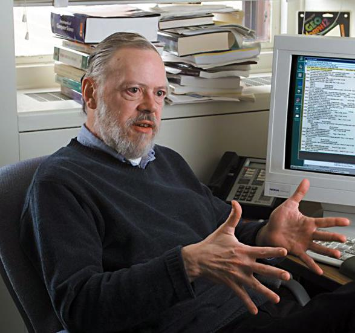

1A. Pengenalan Bahasa C
C adalah bahasa pemprograman general purpose yang digunakan untuk membuat berbagai aplikasi mulai dari sistem operasi seperti unix, kernel seperti linux, antivirus, embeded system hingga compiler untuk bahasa pemprograman.
Sejarah Bahasa Pemprograman C
Dikembangkan pertama kali oleh Dennis Ricthie pada tahun 1972 di Bell Labs. Bahasa pemprograman C merupakan pengembangan dari bahasa pemprograman B, yang saat itu digunakan untuk menulis sistem operasi unix. Tetapi karena bahasa B terkesan lambat, maka dikembangkanlah bahasa C ini untuk menulis kembali dan menutupi kelemahan-kelemahan yang ada pada sistem operasi unix.

Bahasa C ini masuk dalam kategori bahasa tingkat menengah karena kecepatannya dan kemampuannya mengakses fungsi-fungsi dan perintah dasar bahasa mesin seperti bahasa tingkat rendah assembly, serta struktur dan tata bahasa C cenderung lebih mudah dibaca oleh manusia seperti bahasa tingkat tinggi python, ruby, java, dll.
Pada perkembangannya, muncul versi-versi C lain yang pada akhirnya membuat kebingungan di kalangan programmer C. Karena itu, pada tahun 1983, American National Standards Institute (ANSI) membuat sebuah komite untuk membuat sebuah versi standar dari bahasa C. Setelah melalui proses yang panjang dan sengit, pada tahun 1989, telah berhasil disahkan standar yang dinamakan ANSI X3.159-1989, versi ini sering kali dinamakan ANSI C.
Kelebihan Bahasa Pemprograman C
Bahasa C memiliki beberapa kelebihan diantaranya :
- Cepat, efisiensi dan kemampuan mengontrol penggunaan memori secara dinamis serta akses ke perintah dasar bahasa mesin membuat bahasa ini umumnya digunakan untuk membuat sistem dan jaringan komputer, embeded system dan aplikasi yang mengontrol perangkat keras secara langsung.
- Portabel dan multi-platform, karena compiler dari bahasa ini tersedia hampir di semua platform.
- Bahasa C mempunyai struktur yang baik sehingga mudah untuk dipahami. C disebut dengan bahasa yang terstruktur karena menggunakan fungsi-fungsi sebagai program-program bagiannya.
Kenapa Kita Belajar Bahasa Pemprograman C
Bahasa C dibuat kurang lebih 49 tahun yang lalu (saat tutorial ini ditulis), jadi bisa dibilang bahasa C tergolong bahasa yang cukup tua, lantas mengapa kita harus belajar bahasa ini, kenapa tidak langsung belajar bahasa tingkat tinggi saja seperti pyhon, ruby, java, dll. Selain karena kelebihannya yang sudah disebutkan diatas, bahasa C cocok untuk dipelajari oleh pemula yang baru belajar pemprograman karena :
- C adalah bahasa pemprograman prosedural, sehingga kita tidak langsung dipusingkan dengan konsep pemprograman berbasis objek.
- Bahasa C hanya menyediakan sedikit kata kunci, C standar ASNI hanya menyediakan sebanyak 32 kata kunci, Turbo 39 kata kunci, C++ 48 kata kunci. Semakin sedikit kata kunci yang digunakan oleh suatu bahasa maka semakin mudah bagi kita untuk mempelajari dan menggunakan bahasa ini.
- Bahasa-bahasa tingkat tinggi seperti python, java, php, dll. merupakan turunan atau pengembagan dari bahasa C, maka kita jadi lebih mudah untuk mempelajari bahasa-bahasa tersebut setelah belajar bahasa C.
- C memiliki beragam library untuk memudahkan kita untuk melakukan tugas-tugas tertentu.
- Bahasa c sangat baik digunakan sebagai bahasa pengantar untuk belajar algortima.
Jadi bisa kita simpulkan, bahasa pemprograman C ini cocok untuk dipelajari sebagai bahasa pemprograman pertama kita. Dibagian berikutnya kita akan membahas apa itu Compiler, Source Code dan Binary File.